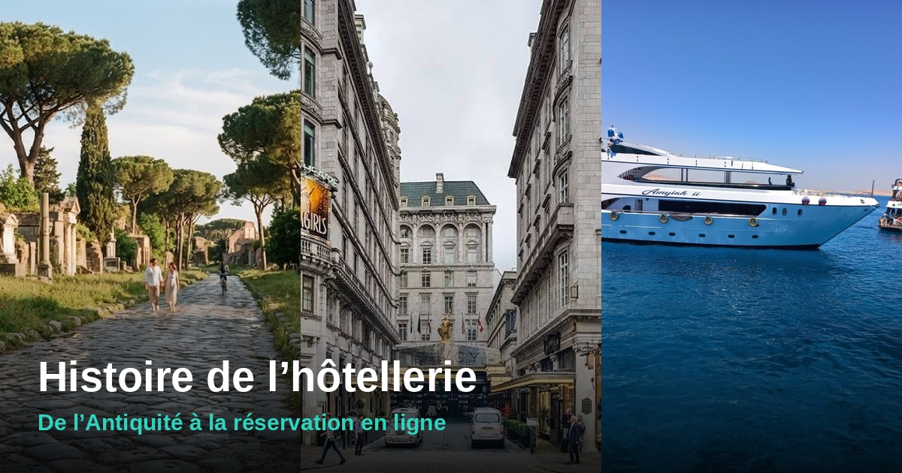

Histoire de l’hôtellerie : des auberges antiques aux palaces et à la réservation en ligne

En bref : l’hôtellerie est née de la nécessité de dormir en route, avant de devenir un art de vivre, puis une industrie. À chaque époque, une façon de voyager a fait naître de nouvelles destinations. Voici le grand tour, de l’Antiquité à la réservation en ligne.
Aujourd’hui, on réserve une chambre en trois clics. Pendant des siècles, trouver où dormir était la vraie difficulté du voyage. Et la carte des destinations à la mode a toujours suivi celle des moyens de transport et des congés. Suivons les deux fils ensemble.
- Antiquité : les premières étapes
- Moyen Âge : l’hospitalité sacrée
- XVIe–XVIIIe siècles : auberges, relais et Grand Tour
- XIXe siècle : le train et les grands hôtels
- Belle Époque : l’âge des palaces
- 1936–1960 : les congés payés et le tourisme de masse
- Années 1960–1970 : stations et chaînes
- Années 1980–2000 : le soleil à bas prix
- Depuis 2000 : l’hôtellerie en ligne
- Frise récapitulative
- Questions fréquentes
1. Antiquité : les premières étapes
Dans l’Antiquité, on ne voyage guère pour le plaisir : on commerce, on administre, on fait la guerre, on va en pèlerinage. L’Empire romain, avec son réseau de routes, organise des relais pour les voyageurs officiels et les marchands, avec des étapes pour changer de monture et passer la nuit, et des auberges sur les axes fréquentés. Dormir y est rustique, et la réputation des auberges est souvent mauvaise.
Le voyage d’agrément existe pourtant déjà, autour des sources chaudes et des villas du littoral. Les Romains fréquentent les bains et les stations thermales, ancêtres lointains de nos villes d’eaux.

2. Moyen Âge : l’hospitalité sacrée
Au Moyen Âge, l’accueil du voyageur est un devoir religieux. Monastères, abbayes et hospices ouvrent leurs portes aux pèlerins en route vers Rome, Jérusalem ou Saint-Jacques-de-Compostelle. On y reçoit le pauvre comme le riche, souvent gratuitement ou contre une offrande. Les auberges et les tavernes se développent en parallèle sur les routes marchandes et près des foires.
Les destinations de l’époque sont des lieux de foi : sanctuaires, reliques, cathédrales. Les villes qui les abritent apprennent déjà à loger et nourrir des foules de visiteurs, un métier qui deviendra l’hôtellerie.

3. XVIe–XVIIIe siècles : auberges, relais et Grand Tour
Avec les États modernes naissent les services de poste, et avec eux des relais où l’on change de chevaux et où l’on mange et dort. Les auberges se multiplient sur les grands itinéraires, mais le confort reste inégal : on partage souvent la chambre, parfois le lit.
Au XVIIIe siècle apparaît une nouvelle manière de voyager : le Grand Tour. Les jeunes aristocrates britanniques, puis d’autres Européens, parcourent la France et l’Italie pour parfaire leur éducation, vers Paris, Rome, Venise ou Florence. C’est le premier voyage « culturel » organisé autour de grandes destinations. Les villes d’eaux, comme Spa en Belgique ou Bath en Angleterre, deviennent en parallèle des lieux de cure et de mondanités.
Sur la Méditerranée, l’idée de passer l’hiver au soleil commence à séduire les Britanniques : la future Côte d’Azur accueille ses premiers hivernants au XVIIIe siècle, bien avant d’être une destination d’été.

4. XIXe siècle : le train et les grands hôtels
Le XIXe siècle change tout. Le chemin de fer raccourcit les distances, la bourgeoisie s’enrichit, et le voyage devient un loisir. Les hôtels changent d’échelle : on construit de grands établissements pensés pour accueillir des centaines de clients.
| Année | Événement |
|---|---|
| 1829 | Le Tremont House ouvre à Boston, souvent cité comme un hôtel pionnier, avec des chambres que l’on peut fermer à clé, l’eau courante intérieure et une réception |
| 1834 | Lord Brougham séjourne à Cannes et y fait construire une villa, début de la mode des hivernants britanniques |
| 1855 | Ouverture du Grand Hôtel du Louvre à Paris, à l’occasion de l’Exposition universelle ; la même année, Napoléon III et l’impératrice Eugénie séjournent à Biarritz |
| 1864 | Le train arrive à Nice |
Repères historiques classiques ; voir « Sources et méthode ».
Les stations naissent
Sur la Côte d’Azur, Nice, Cannes puis Menton accueillent les hivernants fortunés, et la Promenade des Anglais devient l’emblème de la saison d’hiver. Sur l’Atlantique, la présence de la cour impériale lance Biarritz. En Normandie, Deauville est lancée dans les années 1860 comme station balnéaire élégante pour la haute société parisienne, à quelques heures de train de la capitale.
Un point de bascule : on voyage désormais pour la saison, pas seulement pour une étape. Les hôtels deviennent la destination.
5. Belle Époque : l’âge des palaces
À la fin du XIXe siècle, l’hôtellerie de luxe atteint son apogée. À Londres, le Savoy ouvre en 1889 avec l’électricité et des salles de bains en nombre inhabituel pour l’époque. À Paris, César Ritz ouvre le Ritz, place Vendôme, en 1898 : il pose les bases du palace moderne, où le service est le véritable luxe.
La Riviera fait le plein l’hiver, les Alpes et les stations thermales accueillent l’été, et de grands hôtels bordent les gares, les lacs et les côtes. Le voyage devient aussi plus facile à préparer : en 1900, le Guide Michelin paraît d’abord comme un petit livre offert aux automobilistes, avec des adresses d’hôtels et de garages. Il ajoutera les étoiles de restaurant en 1926 puis la troisième étoile en 1931 : c’est une des premières grandes « notations » au service du voyageur.
Le premier Guide Michelin est publié pour encourager l’usage de l’automobile : le voyage en voiture commence à créer ses propres étapes.

6. 1936–1960 : les congés payés et le tourisme de masse
Jusque-là, partir en vacances reste un privilège. En France, les accords de Matignon de juin 1936 instaurent deux semaines de congés payés. Dès l’été, des centaines de milliers de salariés prennent le train vers la mer, la campagne ou la montagne ; on parle de 600 000 puis de 1,7 million de départs en vacances en 1936. Pour comprendre comment la France se situe aujourd’hui dans le monde, lisez notre article sur l’histoire des congés payés.
Après la guerre, un nouveau modèle apparaît : en 1950, le Club Méditerranée lance ses premiers villages de vacances, avec une formule tout compris qui change l’idée même de séjour. L’hôtel n’est plus seulement un lieu où l’on dort, c’est un univers où l’on passe ses vacances.

7. Années 1960–1970 : stations et chaînes
Avec la croissance des Trente Glorieuses, la voiture et les vacances d’été pour tous, la demande explose. L’État organise l’accueil sur le littoral : la mission Racine, créée le 18 juin 1963, aménage le Languedoc-Roussillon. L’objectif : détourner une partie des touristes qui partaient en Espagne et offrir de nouvelles plages en France. La capacité d’accueil passe d’environ 250 000 à 650 000 lits sur la côte languedocienne. Ainsi naissent La Grande-Motte, le Cap d’Agde ou Port-Barcarès, de grandes stations pensées d’un seul geste.
Côté hôtels, l’industrie s’organise. Novotel naît en 1967, ibis en 1974, puis Formule 1 en 1985 : la chambre standardisée, simple et bon marché répond à la clientèle des voyages en voiture et des déplacements professionnels. La montagne connaît le même mouvement avec de grandes stations de ski, même si nous n’avons pas ici retenu de dates précises.
8. Années 1980–2000 : le soleil à bas prix
Avec les vols charters et les voyagistes, les destinations lointaines deviennent accessibles. Le Bassin méditerranéen et l’Afrique du Nord se lancent dans le tourisme balnéaire.
- Égypte : la mer Rouge s’ouvre sur le Sinaï à partir d’environ 1981 ; Sharm el-Sheikh ne compte que trois hôtels en 1983. La station intégrée d’El Gouna ouvre en 2000, et l’aéroport de Marsa Alam en 2003 ouvre le sud de la côte.
- Maroc : le royaume lance sa « Vision 2010 » avec l’objectif de 10 millions de touristes, contre 5 millions en 2004. Marrakech et Agadir sont au cœur de la stratégie.
- Tunisie : Djerba, Hammamet et Sousse deviennent des destinations de séjour classiques des vacanciers européens.
Ces destinations restent celles que l’on retrouve en hiver : notre sélection de destinations au soleil en décembre en donne le détail chiffré.

9. Depuis 2000 : l’hôtellerie en ligne
Internet change la façon de choisir et de réserver. Booking.com est fondé en 1996 aux Pays-Bas ; les plateformes de réservation se généralisent dans les années 2000. Les voyageurs comparent les prix, lisent les avis d’autres clients et réservent eux-mêmes, sans agence. Les hôtels doivent désormais soigner leur note autant que leur façade.
L’offre se diversifie : locations entre particuliers, gîtes, cabanes, roulottes, bulles et autres logements atypiques complètent les hôtels. Le voyageur ne cherche plus seulement une chambre, il cherche une expérience, et choisit souvent sa destination en fonction du logement.
Frise récapitulative
| Époque | Mode de voyage | Hébergement | Destinations phares |
|---|---|---|---|
| Antiquité | Routes impériales | Relais, auberges | Bains, villas du littoral |
| Moyen Âge | Pèlerinage | Monastères, hospices | Rome, Saint-Jacques |
| XVIIIe | Diligence, Grand Tour | Auberges, relais | Paris, Italie, villes d’eaux |
| XIXe | Chemin de fer | Grands hôtels | Côte d’Azur, Biarritz, Deauville |
| Belle Époque | Train, automobile | Palaces | Riviera, Paris, Londres |
| 1936–1960 | Train, voiture | Pensions, villages de vacances | Mer, montagne, campagne |
| 1960–1970 | Voiture, avion | Stations, chaînes | Languedoc, stations de ski |
| 1980–2000 | Vols charters | Clubs, resorts | Sinaï, Maroc, Tunisie |
| Depuis 2000 | Vols low cost, internet | Hôtels, locations, atypiques | Partout |
Questions fréquentes
Quel est le plus ancien hôtel du monde ?
Le Nishiyama Onsen Keiunkan, au Japon, fondé en 705, est présenté comme le plus ancien hôtel encore en activité.
Quand sont nés les congés payés en France ?
En juin 1936, avec les accords de Matignon : deux semaines de congés payés pour les salariés.
Qui a créé le palace moderne ?
César Ritz est souvent associé à la naissance du palace moderne : le Ritz parisien ouvre en 1898 place Vendôme.
Pourquoi la Côte d’Azur était-elle d’abord une destination d’hiver ?
Parce que ses premiers visiteurs, surtout britanniques, venaient y chercher la douceur de l’hiver. Le goût de la baignade d’été est venu plus tard.
Que fut la mission Racine ?
Un projet d’aménagement lancé le 18 juin 1963 pour créer de nouvelles stations balnéaires sur le littoral du Languedoc-Roussillon.
🏨 À votre tour d’écrire l’histoire
Les voyageurs d’hier ne pouvaient pas comparer. Vous, si : trouvez l’hôtel qui vous correspond, avec les notes, les prix et les avis.
Comparer les hôtelsSources et méthode
Les repères de cet article (Keiunkan 705, Tremont House 1829, Grand Hôtel du Louvre 1855, Savoy 1889, Ritz 1898, guide Michelin 1900, étoiles 1926 et 1931, congés payés 1936, Club Méditerranée 1950, Novotel 1967, ibis 1974, Formule 1 1985, mission Racine 1963, Booking.com 1996, développement du Sinaï, d’El Gouna et de Marsa Alam, Vision 2010 du Maroc) proviennent de sources publiques vérifiées. Les épisodes plus anciens (Antiquité, Moyen Âge, Grand Tour, premiers hivernants de la Riviera) sont présentés à grands traits, sans date précise quand nous n’avons pas pu la confirmer. Les chiffres de fréquentation et de lits sont des ordres de grandeur.
Crédits photos : place Vendôme : Arthur Weidmann, Wikimedia Commons ; Venise : Canaletto, Google Cultural Institute, domaine public, Wikimedia Commons
Les images de la voie romaine, de l’auberge de pèlerins et des vacanciers à vélo sont des illustrations.